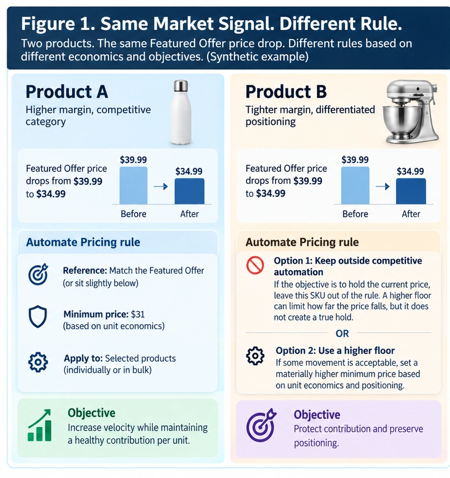
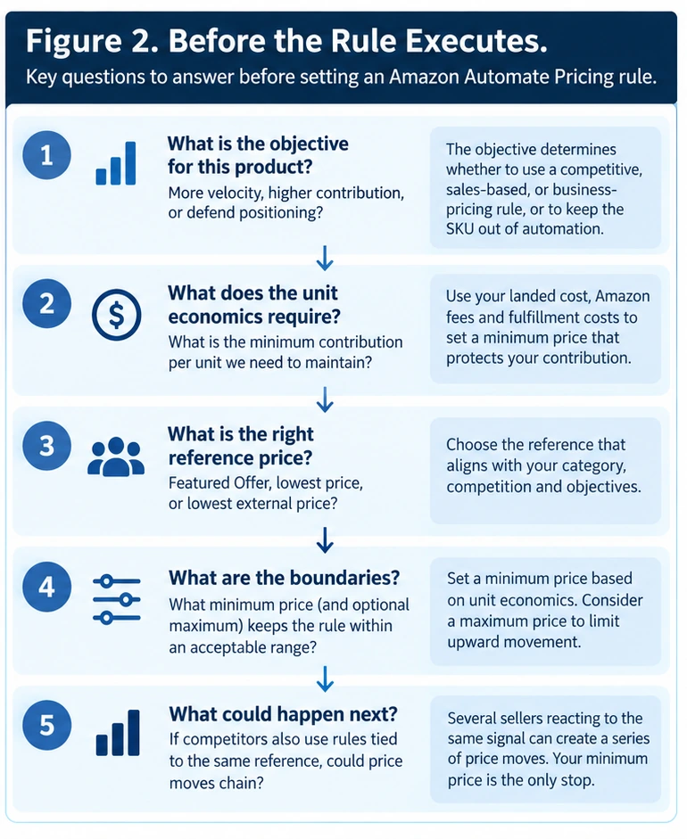

Nermin Sad · CEO & Co-founder
Nermin Sad · CEO & Co-founderAs of October 2026, Amazon’s Automate Pricing tool supports competitive, sales-based, and business-pricing rules. Sellers choose the logic, the products it applies to, and the pricing limits; Amazon handles the execution.
That is useful automation.
But the most important pricing decisions often happen before automation starts.
Who decided which market reference should matter?
Who decided how far the product should move?
Who decided the minimum?
Who decided which SKUs belong under the same rule?
And what business objective is that rule actually trying to serve?
That is where the decision layer begins.
1. A pricing rule is a decision made before execution
Imagine creating a competitive pricing rule:
Match the Featured Offer, but do not go below $31.
The instruction looks simple.
But several commercial assumptions are hidden inside it.
You have already decided that the Featured Offer is the right reference for this product.
You have decided that matching it makes more sense than remaining above or below it.
And you have decided that $31 is a boundary you are willing to defend.
Amazon can execute those instructions.
What automation cannot determine for you is whether the assumptions behind them are appropriate for this product.
That distinction matters.
A rule automates a decision process you have already designed.
Good logic can become faster and more consistent through automation. Weak logic can become faster too.
2. A reference price tells you what changed—not necessarily what it means
Suppose the Featured Offer moves from $39.99 to $34.99.
That is a genuine pricing signal.
But the number itself does not tell you why it moved.
Was it a promotion?
Is someone clearing inventory?
Did demand change?
Did one seller move and other automated rules react afterward?
Is the new price likely to last?
What evidence justifies giving up $5 of selling price?
This connects to the idea explored in Competitor Price Changes: Signal or Echo?.
If several sellers use rules tied to the lowest price or Featured Offer, then a movement that changes those reference prices can plausibly trigger subsequent reactions.
What looks like several independent market decisions may therefore include reactive movements.
That does not make the new prices irrelevant. But what changed and what that change means for your business are not the same question.
3. The floor becomes more meaningful when you show the economics
Consider one synthetic product.
Assume its current selling price is $39.99, with these simplified unit economics:
| Illustrative unit economics | Amount |
|---|---|
| Product cost | $14.00 |
| Fulfillment and handling | $8.00 |
| Marketplace fee | 15% of selling price |
The 15% fee is only an illustration. Actual Amazon fees vary by category, fulfillment method, services used, and other factors.
Now watch what happens as price falls:
| Selling price | Illustrative fee | Contribution before advertising, returns, overhead and other costs |
|---|---|---|
| $39.99 | $6.00 | $11.99 |
| $34.99 | $5.25 | $7.74 |
| $31.00 | $4.65 | $4.35 |
| $30.00 | $4.50 | $3.50 |
If this business requires at least $4 of contribution per unit, the break-even price for that requirement under these assumptions is approximately $30.59. Setting the minimum at $31 therefore leaves a small buffer above that threshold.
Moving from $39.99 to $34.99 is only a 12.5% price reduction, yet contribution per unit falls by roughly 35%.
At $34.99, the seller would need approximately 55% more unit volume to generate the same total contribution as at $39.99. At $31, the required increase is roughly 176%. At $30, roughly 243%.
That does not mean lowering price is wrong. Holding at $39.99 may reduce unit sales, Featured Offer competitiveness, or other outcomes.
Do we have enough evidence that the expected volume gain will compensate for the contribution we are giving up?
4. A pricing floor protects the downside. It is not the strategy.
Our example now has a reason for the $31 floor.
Below roughly $30.59, contribution would fall below the business’s hypothetical $4-per-unit requirement. At $30, for example, contribution is only $3.50.
But the floor still tells us only one thing: where must the rule stop? It does not tell us where the price should actually be today.
At $39.99, contribution is substantially stronger. At $34.99, the product remains profitable under our simplified assumptions but gives up meaningful economics. At $31, the merchant is approaching its hard boundary.
A pricing floor protects the downside. It does not determine the best decision inside the range.
Pricenaux makes a similar distinction in its margin-protective pricing approach: a floor defines how low price is allowed to go, while the broader pricing decision considers whether moving lower is justified in the first place.
5. The same market signal can justify different rules
Now imagine two synthetic products facing the same competitive event:
Featured Offer: $39.99 → $34.99
Product A
Product A has healthy margin, excess inventory, strong price sensitivity, and a deliberate objective to increase velocity.
The merchant may reasonably choose to match the Featured Offer, with a $31 floor. The rule is more responsive because the business has decided that competitive movement and velocity matter enough to justify giving up some contribution.
Product B
Product B has tighter economics, limited inventory, stable performance at its existing price, and stronger differentiation.
If the merchant genuinely wants to hold the current price, the clearest choice is to leave that SKU outside the competitive pricing rule. A higher floor can limit how far the price falls, but it does not create a true hold—the rule can still move the price downward until that floor is reached.
Amazon allows sellers to choose which products receive Automate Pricing rules, individually or in bulk.
So the same marketplace signal can legitimately produce two different configurations—not because one seller is right and the other is wrong, but because the underlying products are different.

Figure 1. The competitive reference can be identical while the appropriate rule differs because product economics, inventory, performance and commercial objectives differ.
6. Sometimes Amazon Automate Pricing is exactly the right tool
None of this is an argument against automated pricing.
For many Amazon sellers, automation is necessary.
If the commercial objective is clear, the reference is appropriate, product economics are understood, and sensible boundaries are already established, Amazon Automate Pricing can remove a great deal of repetitive manual work.
Amazon also makes an important point: lowering price does not guarantee becoming the Featured Offer. Inventory availability, fulfillment, and customer-service performance also contribute.
Sometimes price is the issue. Sometimes it isn’t.
Know what you are automating.
7. Pricing intelligence and automation can complement each other
Rule-based repricing and pricing intelligence address different parts of the problem.
A repricing workflow can execute configured logic efficiently. Pricing intelligence asks what should happen before or alongside that execution.
What signal matters?
What objective matters?
What margin or pricing constraints must hold?
How is the product performing?
How aggressive is the market?
What does demand appear to support?
Does the evidence actually justify movement?
Pricenaux’s Pricing Intelligence vs. Repricing Software framework addresses this broader interpretation layer: market context, product performance, demand, margin, positioning, and business objectives before a pricing decision is executed.
Pricenaux also supports human approval when desired or optional automated execution within configured guardrails.
A merchant may use pricing intelligence to help determine reasonable objectives, responses and guardrails, then use an execution mechanism appropriate to their workflow. In other situations, controlled execution can occur within Pricenaux itself.
Execution should follow the decision—not substitute for it.
8. A catalog rarely has one pricing problem
A hundred SKUs may sit in the same Seller Central account. That does not mean they deserve the same pricing behavior.
Some may be highly price sensitive; others may sustain a premium. Some may be overstocked; others supply constrained. Some may have generous contribution; others may be barely above an acceptable floor.
Which products actually share enough economic and market characteristics to deserve the same pricing rule?
That is a segmentation problem before it is an automation problem.
9. Before the rule executes
A disciplined workflow can be summarized simply:
Objective → Reference → Guardrails → Rule → Execution
Clarify what the business is trying to achieve, which market reference actually matters, and what economic conditions must remain true. Then design the rule. Then automate it.

Figure 2. Automation becomes more useful after the commercial objective, relevant reference and economic guardrails are clear.
Founder Reflection
I don’t think the interesting question is whether sellers should automate pricing.
For many businesses, automation is necessary.
The question I keep coming back to is what happens before that automation begins.
Someone has to decide which signal should matter. Someone has to decide how much margin is enough. Someone has to decide whether two products really deserve the same rule. And someone has to decide what the business is actually trying to optimize.
Once those decisions are clear, automation can be extremely powerful.
But automation cannot make an unclear strategy clear simply by executing it faster.
For me, that is where the decision layer matters.
The goal is not to replace automation. It is to give automation better decisions to execute.
— Nermin Sad, CEO & Co-founder, Pricenaux
Final Thought
Before activating the next repricing rule, ask:
Why is this the right reference?
Why is this the right floor?
Why should this SKU respond this way?
What commercial objective is the rule serving?
If those answers are clear, automation can do what it does very well: execute consistently and quickly.
Faster execution may simply automate uncertainty.
Because the question isn’t whether automation can execute a rule.
The question is whether you’ve given it the right rule to execute.
Have a perspective on this topic?
Continue the discussion with Pricenaux and other operators on LinkedIn.
Join the LinkedIn DiscussionHow strong is your current pricing approach?
Amazon Automate Pricing can execute the rules you give it. But how strong is the decision process behind those rules?
Take the free Pricenaux Pricing Audit in about two minutes. No login or store connection is required, and you’ll receive a pricing maturity score and personalized action plan.